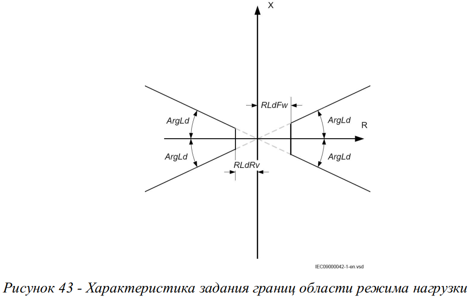
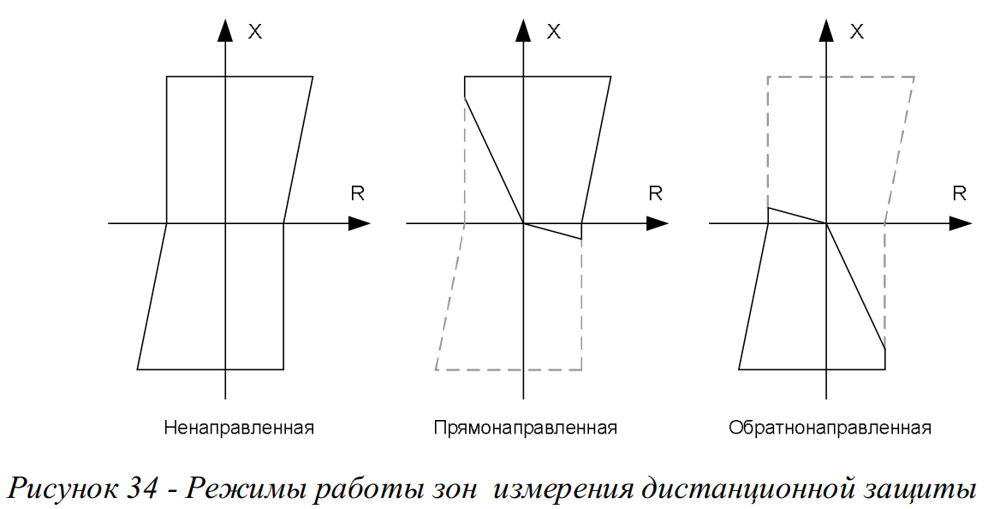
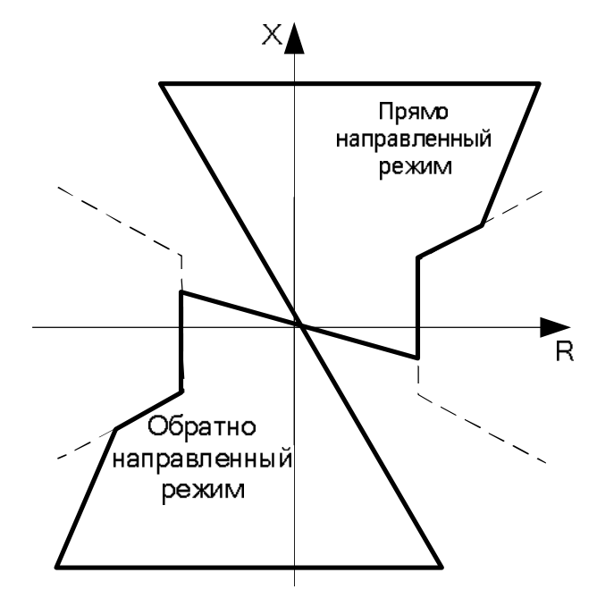
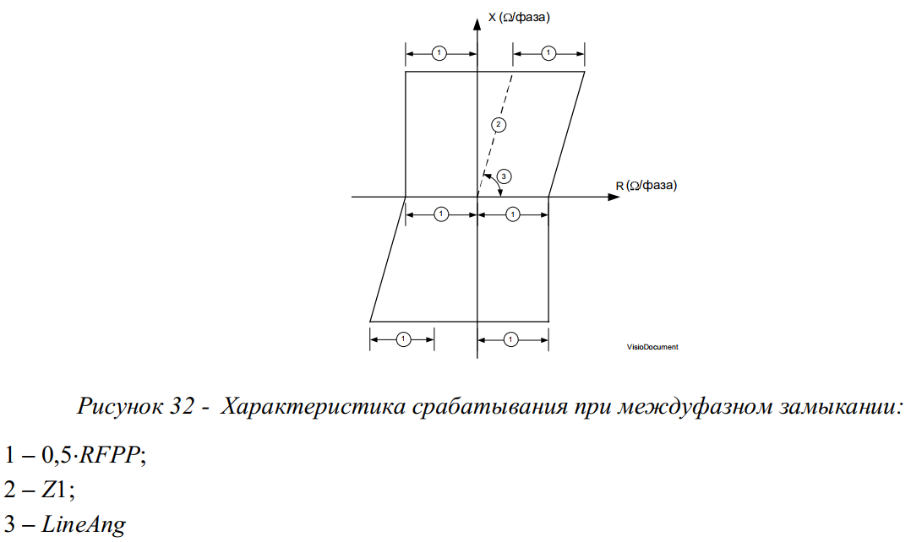
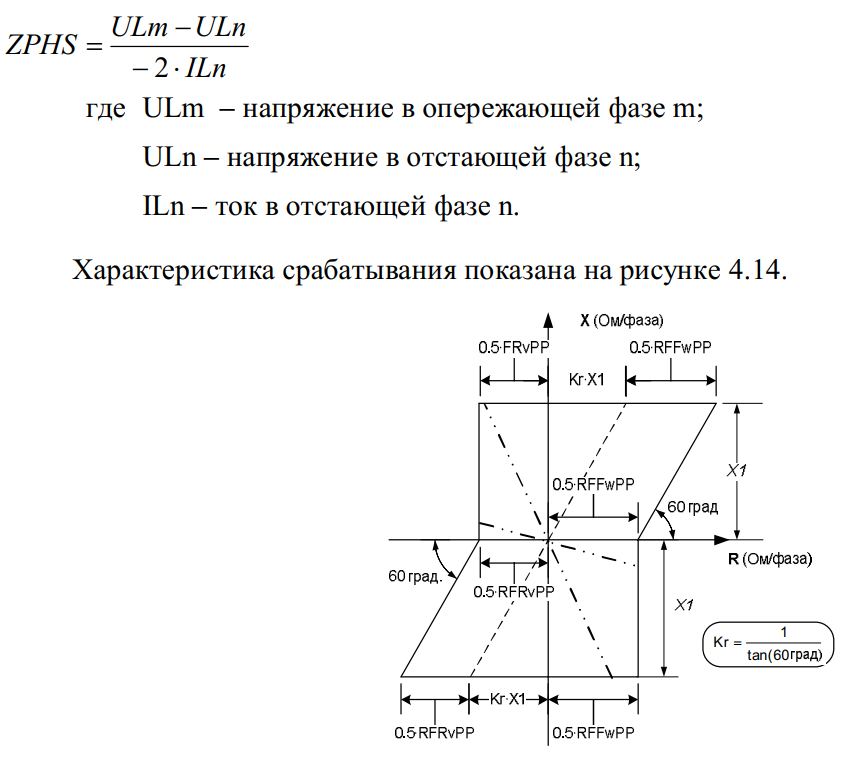
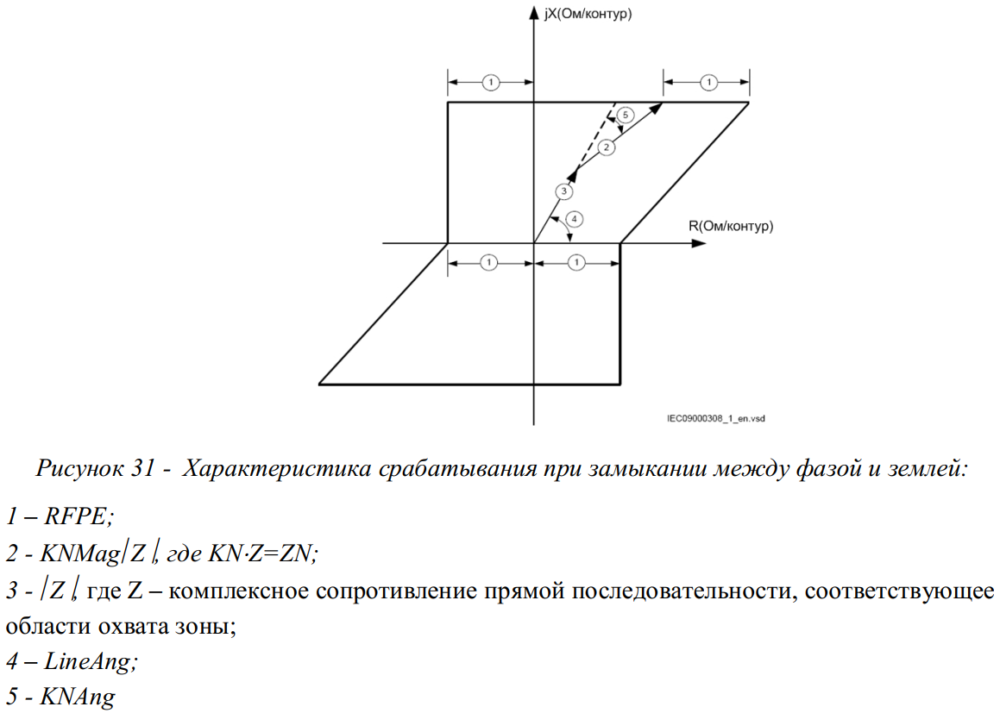
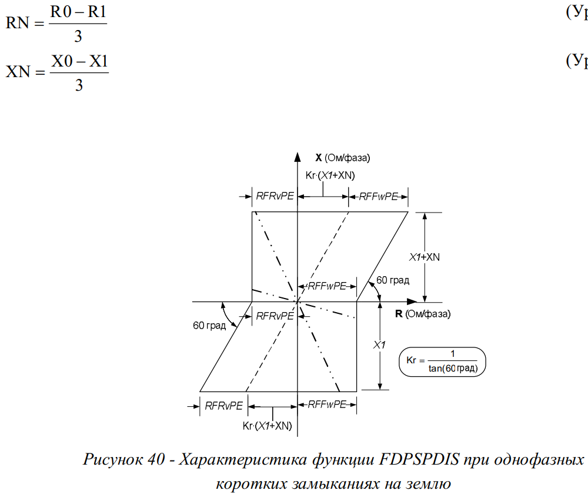
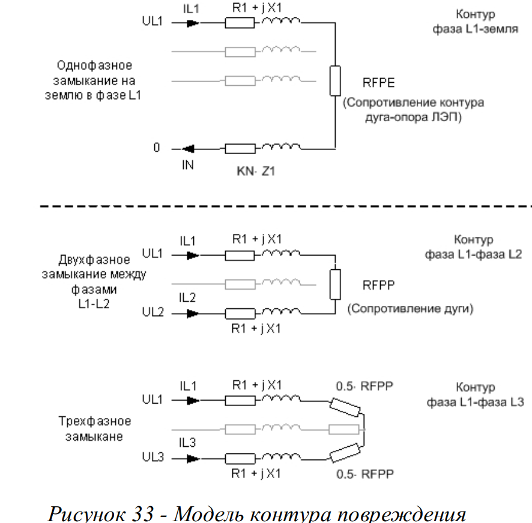
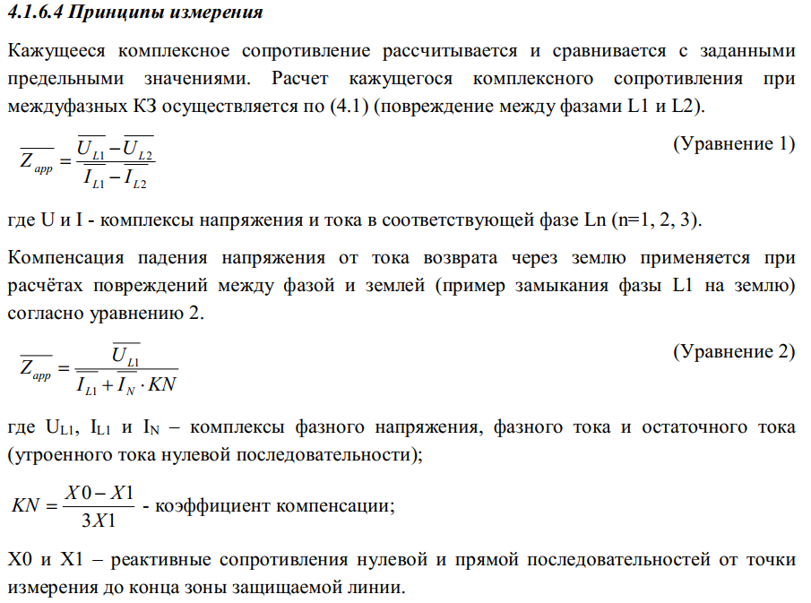
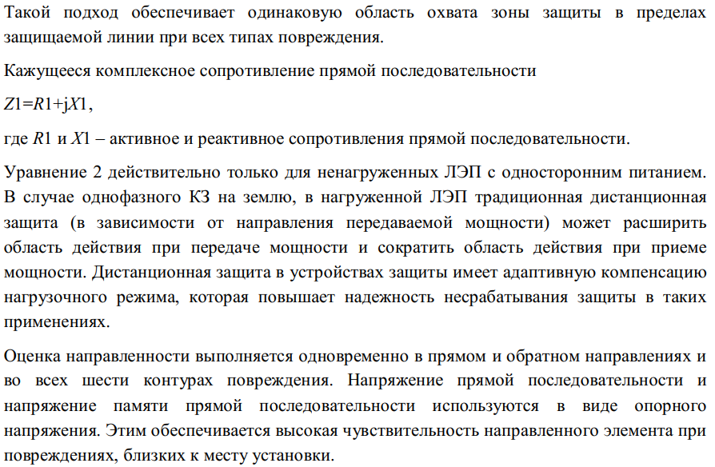

Вырез нагрузки Направление дистанционных органов Характеристики работы фазового селектора Полигональная характеристика ДЗ (фаза-фаза) Селектор повреждений ДЗ (фаза-фаза) Полигональная характеристика ДЗ (фаза-земля) Селектор повреждений ДЗ (фаза-земля) Расчет работы дистанционных органов Расчет работы дистанционных органов Расчет работы дистанционных органов